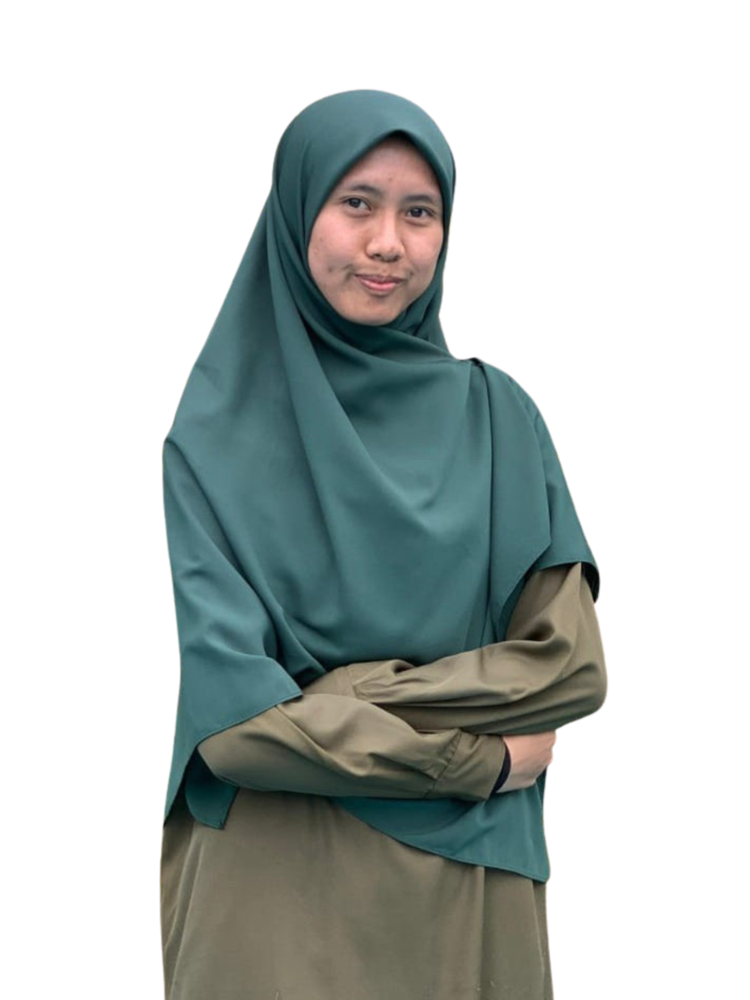
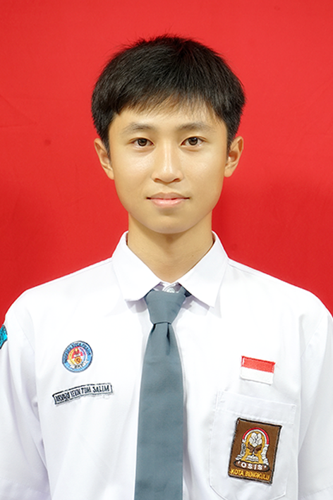
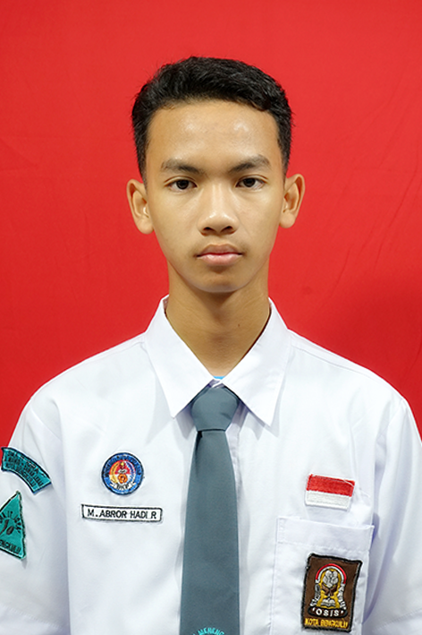
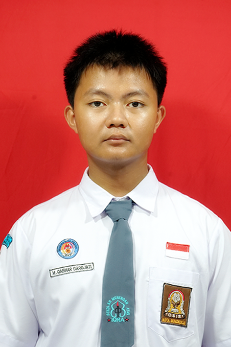
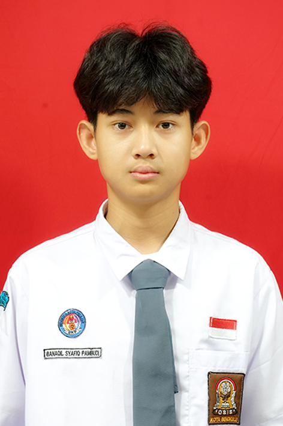
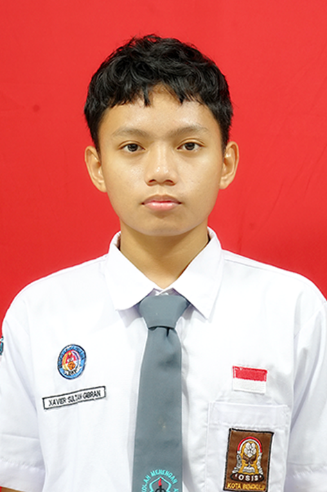

Data tidak ditemukan
Menunggu Sumber DataBelum ada data survei 7 KAIH yang dapat diakses. Silakan segarkan halaman atau klik tombol Unggah Data untuk mengunggah file data.
Meluaskan Cakrawala Generasi Qur'ani Melalui 7 Kebiasaan Anak Indonesia Hebat
Inovasi digital persembahan Tim Hor1zontal untuk mendampingi siswa-siswi SMA IT IQRA' membangun karakter unggul mulai dari bangun pagi, beribadah, hingga istirahat teratur.
“Terwujudnya generasi islami, berprestasi, terampil, mandiri, dan berwawasan global.”
Visi ini menjadi kompas utama seluruh ekosistem pendidikan SMA IT IQRA' Kota Bengkulu dalam memadukan nilai keislaman yang kokoh, keunggulan prestasi, kecakapan hidup, kemandirian inovasi, serta kesiapan bersaing secara global.
-
1
Menyelenggarakan pendidikan yang berlandaskan nilai-nilai Islam untuk membentuk generasi yang beriman, bertakwa, dan berakhlak mulia.
-
2
Meningkatkan kualitas pembelajaran untuk mengantarkan siswa meraih prestasi di tingkat lokal, nasional, dan internasional.
-
3
Membekali siswa dengan berbagai life skills untuk menjadi individu yang mandiri dan siap menghadapi tantangan global.
-
4
Membentuk generasi yang mandiri, mampu menyelesaikan masalah dengan kreatif dan inovatif.
-
5
Membekali siswa dengan wawasan global untuk menjadi warga dunia yang berkompeten dan berkarakter.
Rusli Supriatna, S.Pd.
Kepala SMA IT IQRA' Kota Bengkulu
"Mewujudkan Generasi Islami yang Berprestasi, Terampil, Mandiri, dan Berwawasan Global Melalui Kebiasaan Positif Sehari-hari."
Assalamu'alaikum Warahmatullahi Wabarakatuh. Selamat datang di Dashboard Sekolah SMA IT IQRA' Kota Bengkulu. Kehadiran dashboard ini merupakan wujud komitmen kami dalam memanfaatkan data dan teknologi secara terukur untuk memantau, mengevaluasi, serta membimbing perkembangan karakter peserta didik di seluruh kelas.
Melalui implementasi program 7 Kebiasaan Anak Indonesia Hebat (7 KAIH) pada empat periode bulan November, kami berupaya memastikan setiap siswa menerapkan kebiasaan positif agar memiliki kedisiplinan, akhlak mulia, kemandirian belajar, serta kepedulian sosial yang kuat sebagai bekal masa depan emas.
28 Kelas
Program 7 KAIH • 4 Periode
Data tidak ditemukan (0 Baris)
Identitas Satuan Pendidikan
Data Pokok SMA IT IQRA' Kota Bengkulu
Peta 28 Kelas Aktif
Klik tombol kelas untuk langsung membuka Tren Kelas
Peta Lokasi SMA IT IQRA' Kota Bengkulu
Tekan area peta interaktif atau tombol di bawah ini untuk membuka navigasi langsung menuju SMA IT IQRA' Kota Bengkulu di Google Maps.
Pilar Pembinaan Siswa
Tiga fondasi utama SMA IT IQRA' Kota Bengkulu dalam membentuk karakter, kemandirian, dan prestasi peserta didik (klik kartu untuk detail)
Pembinaan Akhlak Qur'ani & Karakter Islami
Menanamkan kecintaan terhadap Al-Qur'an, kedisiplinan ibadah harian, dan adab mulia dalam keseharian siswa.
Pembiasaan Hidup Sehat, Disiplin & Gemar Belajar
Membangun keseimbangan antara kebugaran jasmani, pola makan bergizi, istirahat teratur, dan semangat literasi.
Kepedulian Sosial & Pendampingan Personal
Menumbuhkan kepekaan bermasyarakat, semangat gotong royong, serta bimbingan hangat dari wali kelas dan guru.
Program VERTIKAL • Pembiasaan Karakter Terintegrasi
Tujuh kebiasaan harian yang dirancang untuk membentuk generasi beriman, sehat jasmani, cerdas bernalar, dan peduli lingkungan sosial di seluruh 28 kelas SMA IT IQRA' Kota Bengkulu.
Tren Keseluruhan 7 Kebiasaan Anak Indonesia Hebat (Kelas)
Eksplorasi capaian, proporsi kontribusi, sebaran kelas, serta dinamika perkembangan seluruh 7 kebiasaan anak Indonesia hebat dalam ruang visualisasi 3D interaktif yang otomatis menyesuaikan filter kelas di bawah ini.
Filter Data Tren Kelas (Pilihan Ganda • 7 Kebiasaan)
Data tidak ditemukan
Capaian paling konsisten
Fokus pendampingan lanjutan
0 siswa unik berpartisipasi
3D Column Chart: Capaian 7 Kebiasaan
Membandingkan tingkat capaian (%) masing-masing dari 7 kebiasaan secara vertikal
3D Pie Chart: Proporsi Kontribusi 7 Kebiasaan
Menampilkan porsi kontribusi setiap kebiasaan terhadap total pembiasaan karakter
3D Scatter Plot: Peta Sebaran Kelas
Memetakan posisi setiap kelas berdasarkan partisipasi, capaian, dan konsistensi
3D Surface Plot: Kontur Capaian 7 Kebiasaan × Waktu
Menggambarkan dinamika perubahan skor pada setiap kebiasaan antar periode
Kesimpulan Menyeluruh Tren Kelas (7 Kebiasaan Anak Indonesia Hebat)
Cakupan: 0 KelasRekapitulasi otomatis ketujuh dimensi kebiasaan berdasarkan kelas aktif yang dipilih
Tren Keseluruhan 7 Kebiasaan Anak Indonesia Hebat (Individu)
Cari nama siswa sesuai data atau saring berdasarkan jenjang, jurusan, kelas, dan periode untuk menampilkan profil capaian 7 kebiasaan per individu dalam visualisasi 3D lengkap.
Filter Pilihan Ganda & Pencarian Nama Siswa (Tren Individu)
Data & Grafik Individu Terkunci
Anda tetap dapat mencari nama siswa di atas atau melihat data akumulasi kelas/jenjang. Masukkan Passkey 6 digit untuk membuka grafik dan rincian survei per siswa.
-
Rata-rata 7 kebiasaan siswa
Kebiasaan paling menonjol
Aspek pembinaan personal
Catatan pengisian siswa
3D Column Chart: Capaian 7 Kebiasaan Individu
Menampilkan skor capaian (%) siswa terpilih pada setiap kebiasaan
3D Pie Chart: Proporsi Kontribusi 7 Kebiasaan Individu
Menampilkan keseimbangan porsi setiap kebiasaan pada profil siswa terpilih
3D Scatter Plot: Posisi Individu vs Rekan Sekelas
Membandingkan posisi siswa terpilih (bola sorot utama) terhadap rekan sekelasnya
3D Surface Plot: Kontur 7 Kebiasaan Individu × Waktu
Melacak dinamika capaian siswa terpilih dari periode pertama hingga keempat
Kesimpulan & Profil Karakter Eksklusif Individu
Profil Siswa: -Tentang Tim Pembuat Dashboard Sekolah
Kolaborasi antara 2 Guru Pembimbing dan 5 Anggota Tim SMA IT IQRA' Kota Bengkulu dalam merancang, mengolah data 28 kelas, dan membangun sistem pemantauan 7 Kebiasaan Anak Indonesia Hebat (7 KAIH).
Guru Pembimbing & Pembina
Dewan guru pembimbing penyusunan program dan validasi data dashboard
Ferdi Syahdani, S.Pd., Gr.
Membimbing perancangan desain sistem, pengalaman visual antarmuka dashboard, serta penyelarasan identitas program 7 Kebiasaan Anak Indonesia Hebat (7 KAIH).

Yunita Rahmani, S.Pd., Gr.
Membimbing validasi dataset survei 28 kelas selama empat periode gelombang, pengolahan indikator capaian siswa, serta keakuratan analisis data sekolah.
Anggota Tim Pengembang Dashboard
Pembagian peran teknis, desain antarmuka, pengolahan data, dan pengujian sistem

Arvaro Kevin Tom Salim
Ketua Tim & Koordinator
Mengoordinasikan pembagian tugas tim, menyelaraskan kebutuhan fitur dengan guru pembimbing, serta memastikan setiap tahapan pengembangan berjalan tepat waktu.

Muhammad Abror Hadi Ramadhan
Analis Data & Pengolah Survei
Mengolah dan membersihkan dataset survei 7 KAIH dari seluruh 28 kelas selama 4 periode gelombang agar siap disajikan secara akurat.

Muhammad Qaishar Darojati
Sintesis AI & Wawasan Data
Merancang sintesis analitik otomatis, penyusunan kesimpulan wawasan 7 kebiasaan, serta pemanfaatan kecerdasan buatan Gemini untuk pemetaan karakter siswa.

Banaqil Syafiq Pambudi
Arsitek Antarmuka & Visual 2D/3D
Memimpin pengembangan dashboard interaktif, visualisasi grafik batang 2D serta grafik 3D (Column, Pie, Scatter, dan Surface Plot), dan fitur proteksi privasi siswa.

Xavier Sultan Gibran
Presentasi & Dokumentasi Proyek
Menyusun alur presentasi utama, dokumentasi penggunaan sistem, serta narasi penyampaian capaian program 7 KAIH SMA IT IQRA' Kota Bengkulu.
Filter Pilihan Ganda • Bangun Pagi (28 Kelas)
Rata-rata skor pembiasaan
Akumulasi entri terverifikasi
Siswa unik berpartisipasi
Kelas capaian tertinggi
Perbandingan Capaian
Dinamika Perkembangan Selama 4 Periode Gelombang
Visualisasi Distribusi Jawaban Per Indikator Survei
Grafik Donat & Batang Horizontal interaktif lengkap dengan persentase dan makna capaian tiap butir pertanyaan
Pencarian Siswa • Bangun Pagi
Daftar Jawaban Siswa Terkunci
Data identitas dan rincian jawaban per individu dilindungi. Masukkan Passkey 6 digit untuk menampilkan daftar survei siswa.
Hasil Pencarian Responden Siswa
| No | Nama Siswa | Kelas | Periode | Skor Kebiasaan | Ringkasan Jawaban | Aksi |
|---|---|---|---|---|---|---|
| Data tidak ditemukan | ||||||